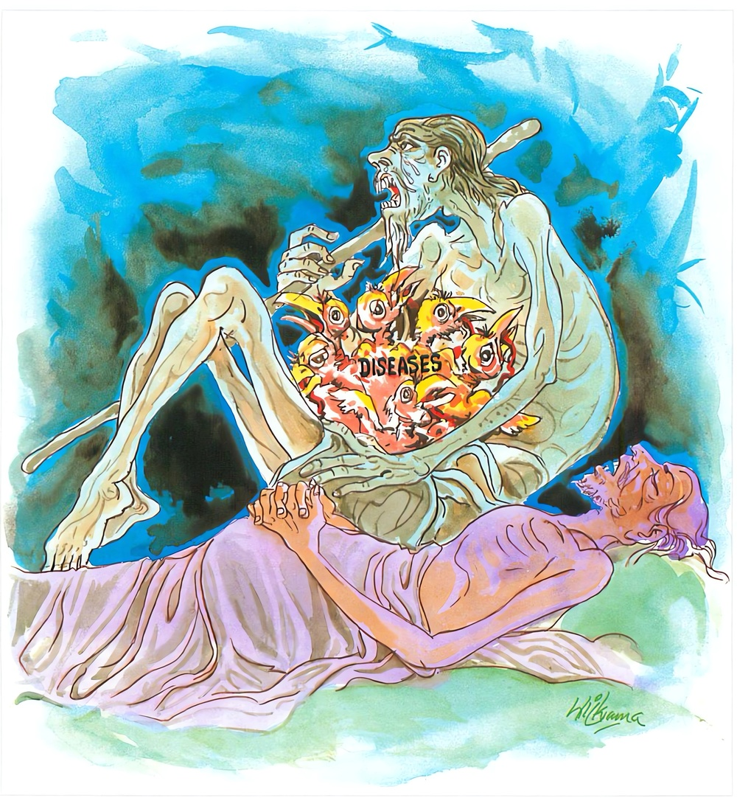

11-3 උත්තරා මෙහෙණ
මෙම කතාව ධම්මපද අටුවාවෙන් ද කියවන්න.
පරිජිණ්ණමිදං රූපං රොගනිඩ්ඪං පභඞ්ගුරං
භිජ්ජති පූතිසන්දෙහො මරණන්තං හි ජීවිතං.
මේ රූපය (පාලු වැ ගිය හෙයින්) ඉතා ජීර්ණ ව ගියේ, වැලිත් නොයෙක් රෝගයනට කැදැල්ලක් බඳු ය. වහා නස්නා සුලු ය. (රන්වන් වුව ද නව දොරින් සතතයෙන් වැහෙන කුණු ඇති බැවින්) කුණු වූ මේ කය තෙම (නොබෝ කලෙකින්) බිඳෙන්නේ ය. කුමක් හෙයින? යත්: සියලු සතුන්ගේ ජීවිතය තෙම යම් හෙයකින් මරණය ම අන්ත කොටැත්තේ ද, එහෙයිනි.

උත්තරා නම් වූ මෙහෙණ, උපතින් එක් සිය විසි අවුරුදු වයස් ඇත්තේ ය. එහෙත් ඕ තොමෝ තමන් මැහැල්ලකැ යි වක ගසා නො ඉඳ ගමට වැද පිඬු සිඟා හැසිරෙන්නී ය. දවසෙක මග දී මහණකු දැක බතින් විචාරා සිඟා ගත් බත් උන්වහන්සේට පිදූ ය. එයින් ඕ තොමෝ නිරාහාර වූ ය. දෙවන තෙවන දවස්හි ද එසේ කළා ය. සිවුවනදාත් ඕ පිඬු සිඟා ගියා ය. එදා එක් පටු මංකඩක දී බුදුරජානන් වහන්සේ ඇයට හමු වූහ. ඈ බුදුරජුන් දැක පාරෙන් ඉවත් වන්නී තමන් පොරොවා තුබූ සිවුරෙහි කොණක් පෑගී කෙලින් සිට ගත නො හැකිව බිම ඇද වැටුනි ය. එකල්හි බුදුරජානන් වහන්සේ ඇය වෙතට ගොස් “මෙහෙණ! තොපගේ අත්බව හොඳට ම දිරා ගොස් තිබේ. එය කල් නො ගොස් අද හෙට ම බිඳ වැටෙන්නේ ය” යි වදාරා මේ ධර්මදේශනාව කළ සේක.
පරිජිණ්ණමිදං රූපං රොගනිඩ්ඩං පභඞ්ගුරං,
භිජ්ජති පූතිසන්දෙහො මරණන්තං හි ජීවිතන්ති.
මේ රූපය ජරායෙන් තදින් දිරා ගියේ රෝගයනට කැදැල්ලක් බඳු ව සිටියේ ය. වහා බිදෙන සුලු ය. කුණු වූ මේ සිරුර වහා බිදෙන්නේ ය. යම් හෙයකින් ජීවිතය, මරණය කෙළවර කොට ඇත්තේ ද එහෙයිනි.
පරිජිණ්ණං ඉදං රූපං = මේ රූපය තදින් දිරා ගියේ ය.
හැමතකින් මුළුමනින් යමක් දිරා ගියේ නම්, ඒ පරිජිණ්ණ යි කියනු ලැබේ. මේ මෙහෙණගේ සිරුර තදින් දිරා ගොස් තුබූ බැවින් මෙසේ වදාළ සේක.
මෙහි රූප නම් ශරීරය යි. ‘යං කිඤ්චි රූපං අතීතානාගත පච්චුප්පන්නං’ යනු රූපස්කන්ධයෙහි ආයේ ය. ‘රූපූපත්තියා මග්ගං භාවෙති’ යනු රූපභවයෙහි ආයේ ය. ‘අජ්ඣත්තං අරූපසඤ්ඤී බහිද්ධා රූපානි පස්සති’ යනු කසිණ නිමිත්තයෙහි ආයේ ය. ‘චක්ඛුං ච පටිච්ච රූපෙ ච උප්පජ්ජති චක්ඛු විඤ්ඤාණං’ යනු වර්ණයෙහි ආයේ ය. ‘ රූපප්පමාණො රූපප්ප සන්තො’ යනු සණ්ඨානයෙහි ආයේ ය. ‘ආකාසො පරිවාරිතො රූපන්තෙව සඞ්ඛං ගච්ඡති’ යනු ශරීරයෙහි ආයේ ය.
ස්වකීය ස්වභාවය පවසනුයේ හෝ වෙනස් බවට විකාරයට විනාශයට පැමිණෙනුයෙ රූප නමි. “රූපෙති පකාසෙති අන්තනො සභාවන්ති = රූපං, රුප්පති විකාරමාපජ්ජතීති වා රූපං” යනු දන්නේය. [1]
රොගනිඩ්ඩං [2] = රෝගයන්ට කැදැල්ලක් ය.
‘රුජතීති = රොගො, රුජති භඤ්ජති අඞ්ග පච්චඞ්ගානීති = රොගො’ අඟ පසඟ බිඳින්නේ හෝ පෙළන්නේ රෝග නමි. මුළු සිරුර නන් වැදෑරුම් රෝගයන්ට වාසස්ථාන බැවින් ‘රොග නිඩ්ඩ’ යි කියන ලද්දේ ය. ‘අක්බිරොගාදීනං අනෙකෙසං රොගානං නිඩ්ඩං කුලාවකන්නි රොගනිඩ්ඩං’
පභඞ්ගුරං = වහා බිඳෙන්නේ ය.
හිවලා තරුණ වුව ද ජරසිගාල යි හඳුන්වනු ලැබේ. තරුණ වූ කිඳිවැල පූතිලතා යි කියත්. එමෙන් එදවස උපන් සිරුර රන්වන් වුයේද නිති වැගිරෙණ අරුතින් කුණු බැවින් ‘පභඞ්ගුර’ යි කියනු ලැබේ. ‘සර සතො උපක්කමතො ච පභඞ්ගුපගමන සීලතාය පභඞ්ගුරං’ යනු අටුවා ය.
භිජ්ජති පූතිසන්දෙහො = කුණු වගුරුවන සිරුර බිඳෙන්නේ ය.
රන්වන් වුව ද, අතර නො තබා නව දොරින් කෙල සොටු ඈ කුණු වගුරණ බැවින් සිරුර ‘ පූතිසන්දෙහ’ යි කියත්. මේ ද තෙල් පිරුණු හිල් වූ සැළක් සේ මේ සිරුරෙන් මල මූ ඈ අසුචි වැගිරෙන්නේ ය. ‘අසූචි සන්දතෙ නිච්චං යථා මෙදකථාලිකා’ යනු ආප්තයි. ‘භිජ්ජති’ යන ක්රියා පදය කල් නො යවා ම බිදෙන බව කියයි.
මරණන්තං හි ජීවිතං = ජීවිතය මරණය කෙළවර කොට සිටියේ යම් හෙයකින් ද එහෙයිනි.
සියලු සත්ත්වයන්ගේ ජීවිතය මරණයෙන් කෙළවර වන්නේ ය. එක් අත් බවක් පිළිබඳ ජීවිතය ය මරණයෙන් කෙළවර වනුයේ. නැවත කොතැනක හෝ ඒ පිහිටන්නේ ය. එතැනින් ද ඒ මරණයෙන් කෙළවර වන්නේ ය. සසර මුළුමනින් කෙළවර වන තුරු මෙසේ ජාතියෙන් ජාතියට මැරි මැරී ඉපද ඉපද යන්නේ ය.
ධර්මදේශනාවගේ අවසානයෙහි මෙහෙණ තොමෝ සෝවාන් වූ ය. ධර්මදේශනාව මහජනයාටත්, වැඩ සහිත වූය.
උත්තරාස්ථවිරා වස්තුව නිමි.